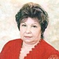

Дошкольное отделение школы № 1100
В 2015 году 50% первоклассников Школы № 1100 пришли из дошкольного отделения.
- улица Академика Челомея, 10А
- улица Академика Челомея, 8Б
Воспитатели
Воспитатели, которых чаще всего благодарят родители (отзывы и профили сотрудников взяты с официального сайта школы):|
Воспитатель
Храмцов Максим Владимирович
2 благодарности |
Логопед
Лисица Ирина Дмитриевна
2 благодарности |
Муз. рук.
Красильникова Елена Николаевна
2 благодарности |
Воспитатель
Даутова Ирина Анатольевна
2 благодарности |
|
Воспитатель
Бутузова Елена Валерьевна
2 благодарности |

Воспитатель
Лапицкая Клавдия Николаевна
1 благодарность |
Воспитатель
Лапкина Ирина Николаевна
1 благодарность |
Воспитатель
Разуваева Элла Александровна
1 благодарность |
|
Воспитатель
Токарева Ольга Владимировна
1 благодарность |
 Воспитатель
Гамжева Анна Владимировна
Воспитатель
Гамжева Анна Владимировна
1 благодарность |
Отзывы
Данные собраны c официального сайта школы и через форму для отзывов.
Праздник 8 Марта в детском саду 1100, группа № 8 (Ромашка) (ул. Ак.Челомея, д.10А) - дорога в дружную семью.
Мы благодарны нашим воспитателям: Елене Валерьевне, Клавдии Николаевне, Маргарите Михайловне и педагогу Ирине Дмитриевне за атмосферу, царившую на детском утреннике. Дети чувствовали себя как дома: рядом мамы, папы, бабушки. В такой обстановке ребенок раскрепощается, улыбается, танцует, читает стихи, поет песни. Никогда в праздничных конкурсах не участвовали родные и близкие детишек. Это было неожиданно и весело!
Спасибо еще раз нашим воспитателям, педагогу и детям за тепло и прекрасное настроение, подаренное всем нам на это весеннем празднике!
Мы благодарны нашим воспитателям: Елене Валерьевне, Клавдии Николаевне, Маргарите Михайловне и педагогу Ирине Дмитриевне за атмосферу, царившую на детском утреннике. Дети чувствовали себя как дома: рядом мамы, папы, бабушки. В такой обстановке ребенок раскрепощается, улыбается, танцует, читает стихи, поет песни. Никогда в праздничных конкурсах не участвовали родные и близкие детишек. Это было неожиданно и весело!
Спасибо еще раз нашим воспитателям, педагогу и детям за тепло и прекрасное настроение, подаренное всем нам на это весеннем празднике!
Выражаем благодарность от лица родителей Всем педагогам садика ул. Ак.Челомея 8б Елене Николаевне, Максиму Владимировичу, Ирине Анатольевне, Ольге Вячеславовне за прекрасно подготовленный и проведенный новогодний утренник в младшей группе "Непоседы". Были приятно удивлены, той огромной работе, которая была проведена с такими маленькими детьми. Дети с огромным удовольствием танцевали, пели, читали стихи, участвовали в конкурсах с Дедом Морозом и Снегурочкой. Представление замечательное!
Вчера в дошкольном отделении по адресу ул.Академика Челомея д.8б состоялся новогодний утренник в группе "Курносики". Словами не выразить тот неописуемый восторг, который испытали родители! Праздник был просто великолепен! Потрясающие зажигательные танцы цыганочек, елочек, скоморохов и белых медведей, а также деда Мороза и Снегурочки, задорные песенки - все идеально подготовлено! Дети искренне радовались и смеялись. Родители перенеслись вместе с детками в самую настоящую сказку! Хочется поблагодарить всех, кто помог провести этот замечательный утренник: воспитателя Эллу Александровну, младшего воспитателя Любовь Викторовну, музыкального руководителя Елену Николаевну, воспитателей-актеров: Ольгу Вячеславовну, Ирину Николаевну, Ирину Анатольевну и Максима Владимировича. Все было на высоте! Трудно представить, как можно научить пятилеток так хорошо и синхронно петь и танцевать. Это был самый настоящий мюзикл! Большое спасибо за ваш неугасаемый энтузиазм, безграничную фантазию и желание сделать не обычный заурядный утренник в два притопа-три прихлопа и хоровод вокруг елки, а самое настоящее представление! Вы подарили детям и родителям настоящий новогодний праздник!
Хочется выразить благодарность всем воспитателям и логопеду группы "Пчелки" за развитие, внимание и заботу о наших детях. Особенно хочется отметить пришедшую в нашу группу в этом году Анну Владимировну - с ней дети вышли на новый творческий уровень...по несколько шедевров в неделю. Я и не знала, что мой ребенок умеет так рисовать:) Дочка ходит в сад с удовольствием - а это самое главное! Спасибо за ваш труд. Мы его ценим.
Хочу выразить благодарность Андреевой Елене Александровне за чуткое и профессиональное руководство, а также воспитателю 10 группы "Колокольчики" Токаревой Ольге Владимировне за прекрасное отношение к детям , за доброту и терпение. Огромное спасибо Вам! Желаю воспитать еще не одно поколение наших детей, у Вас это хорошо получается.
Если вы нашли ошибку или неточность, пожалуйста, сообщите нам об этом.
Ученик, выпускник или родитель? Оставьте отзыв о детском саде.